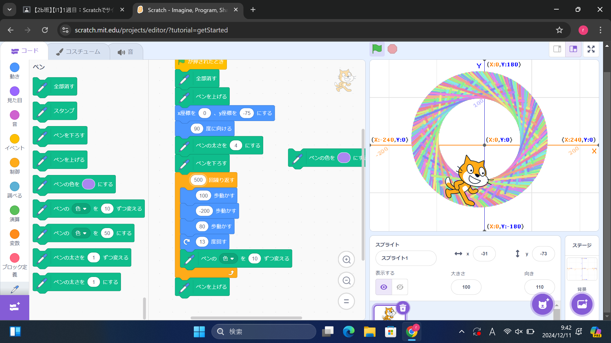
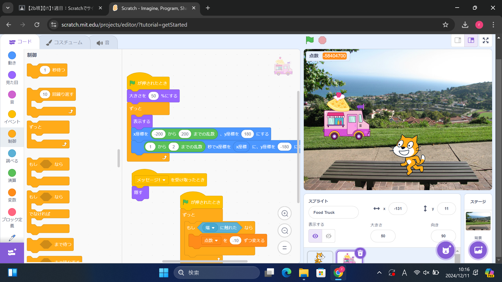

1週目のレポート ： 公大高専１年実習I-1
2b班27番 ふくっち
第1週目
1-1 サイエンスアート

1.内容
スクラッチを使って線を書くプログラムを数を調整したり色を調整したりして、きれいなドーナツ型の円に仕上げました。
2.感想
最初はいろいろな場所の数値を変えてどうなるか探ってみて、探ってる途中にどこが変わるかを理解できて良かったです。
1-2 ゲーム

1.内容
落ちてくるものをキャッチするゲームのプログラムで、乱数を調整して少し難しくしてみたり、床に落ちたらポイントがマイナスされるようにしました。
2.感想
ゲームを作るのはハードルが高く難しいことだと思っていたが、意外と簡単にできて、家でもやってみようと思った。
1-3 ホームページ作成
私のホームページ
1.内容
githubのindex htmlを編集して文字を変えました。」
2.感想
index html のコードの字が細かくて見にくかったです。
各ページへのリンク
1週目のレポート
2週目のレポート
3週目のレポート
私のホームページ